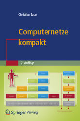

|
|
|  |
Computernetze ermöglichen den Zusammenschluss eigenständiger Computersysteme zur Kommunikation und gemeinsamen Nutzung von Ressourcen. Die Kommunikation in Computernetzen erfolgt über verschiedene Protokolle, die über verschiedene Schichtenmodelle (OSI-Referenzmodell, TCP/IP-Referenzmodell, hybrides Modell) strukturiert werden können.
Zu Beginn der Vorlesung findet eine Einführung in die nötigen Grundlagen der Informatik und der Computernetze statt. Danach werden die Protokolle und ihre Klassifikation in die etablierten Referenzmodelle besprochen. Der Schwerpunkt dieser Vorlesung ist die Beschreibung des Transports von Daten durch die unterschiedlichen Protokollebenen und Übertragungsmedien. Die komplette Vorlesung (inkl. Übungen und Klausur) findet in deutscher Sprache statt. Alle Vorlesungsfolien liegen mit identischem Inhalt in deutscher und englischer Sprache vor. Die im WS1415 verwendeten Vorlesungsunterlagen sind die Grundlage für die 2. Auflage des Buches Computernetze kompakt, das im Februar 2014 bei Springer Vieweg erschienen ist. ISBN: 978-3-642-41652-1 |
|
Diese Seite ist veraltet!
Aktualisierte und verbesserte Vorlesungsunterlagen befinden sich auf der Seite Computernetze im WS1516. |
| Inhalte | |
|---|---|
| Foliensatz 1 | Organisatorisches |
| Foliensatz 2 | Grundlagen der Computervernetzung |
| Foliensatz 3 | Protokolle und Referenzmodelle |
| Foliensatz 4 | Bitübertragungsschicht / Physical Layer (Teil 1) |
| Foliensatz 5 | Bitübertragungsschicht / Physical Layer (Teil 2) |
| Foliensatz 6 | Sicherungsschicht / Data Link Layer (Teil 1) |
| Foliensatz 7 | Sicherungsschicht / Data Link Layer (Teil 2) |
| Foliensatz 8 | Sicherungsschicht / Data Link Layer (Teil 3) |
| Foliensatz 9 | Vermittlungsschicht / Network Layer (Teil 1) |
| Foliensatz 10 | Vermittlungsschicht / Network Layer (Teil 2) |
| Foliensatz 11 | Transportschicht / Transport Layer |
| Foliensatz 12 | Anwendungsschicht / Application Layer |
| Foliensatz 13 | Kryptologie (Teil 1) |
| Foliensatz 14 | Kryptologie (Teil 2) |
| Foliensatz 15 | Steganographie, Plagiatsfallen und Wasserzeichen |
| Inhalte | |
|---|---|
| Übungsblatt 1 | Foliensatz 2 + 3 |
| Übungsblatt 2 | Foliensatz 4 + 5 |
| Übungsblatt 3 | Foliensatz 6 + 7 + 8 |
| Übungsblatt 4 | Foliensatz 9 + 10 |
| Übungsblatt 5 | Foliensatz 11 + 12 |
| Übungsblatt 6 | Foliensatz 13 + 14 + 15 |
| Semester | Klausuren | Bearbeitungszeit | Hochschule | Lösungen | ||
|---|---|---|---|---|---|---|
| SS2015 | 90 Minuten | Frankfurt UAS | ||||
| WS1415 | 90 Minuten | FH Frankfurt | ||||
| SS2014 | 90 Minuten | FH Frankfurt | ||||
| WS1314 | 90 Minuten | FH Frankfurt | ||||
| SS2012 | 90 Minuten | HS Darmstadt | ||||
| Ergebnis der Klausur im SS2016 | Ergebnis der Klausur im WS1516 | Ergebnis der Klausur im SS2015 | Ergebnis der Klausur im WS1415 |
Zu erreichen bin ich am besten per E-Mail: christianbaun@fb2.fh-frankfurt.de
|
Prof. Dr. Christian Baun Frankfurt University of Applied Sciences (1971-2014: Fachhochschule Frankfurt am Main) FB 2: Informatik und Ingenieurwissenschaften Stand: 1.6.2016 |